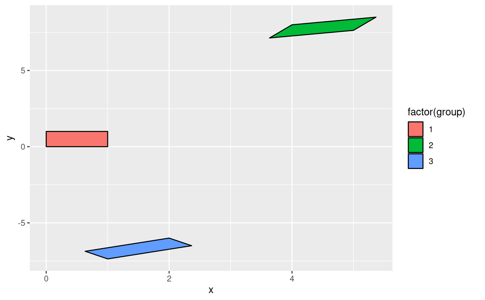

This function lets you compose transformations based on a sequence of linear
transformations. If the transformations are parameterised the parameters will
become arguments in the transformation function. The transformations are
one of rotate, shear, stretch, translate, and
reflect.
linear_trans(...)
rotate(angle)
stretch(x, y)
shear(x, y)
translate(x, y)
reflect(x, y)A number of transformation functions.
An angle in radians
the transformation magnitude in the x-direction
the transformation magnitude in the x-direction
linear_trans creates a trans object. The other functions
return a 3x3 transformation matrix.
trans <- linear_trans(rotate(a), shear(1, 0), translate(x1, y1))
square <- data.frame(x = c(0, 0, 1, 1), y = c(0, 1, 1, 0))
square2 <- trans$transform(square$x, square$y, a = pi / 3, x1 = 4, y1 = 8)
square3 <- trans$transform(square$x, square$y, a = pi / 1.5, x1 = 2, y1 = -6)
square <- rbind(square, square2, square3)
square$group <- rep(1:3, each = 4)
ggplot(square, aes(x, y, group = group)) +
geom_polygon(aes(fill = factor(group)), colour = 'black')
